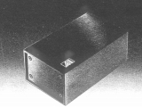
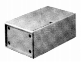
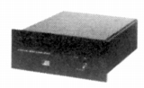

AUDIO INTERFACE(オーディオ・インターフェイス)
1970年後半に登場した昇圧トランス・ヘッドアンプのブランド。当時のプリアンプ等他の製品の資料は見当たらない。当初の代理店は「パイオニア・エンタープライズ」、1981年頃は「ノア」。
�T.昇圧トランス・ヘッドアンプ

（昇圧トランス） CST-80E03 CST-80E40
 (CST-80/�UL)

CST-80/�UL

（ヘッドアンプ） CSA-50
サイトマップへ